Good design is invisible. Bad design is a barrier.
UX designer and researcher at Wilfrid Laurier University. I do research, design and usability testing on real client work, a family driving school and Arduino builds. Accessibility is where I started and it's still what I care about most.
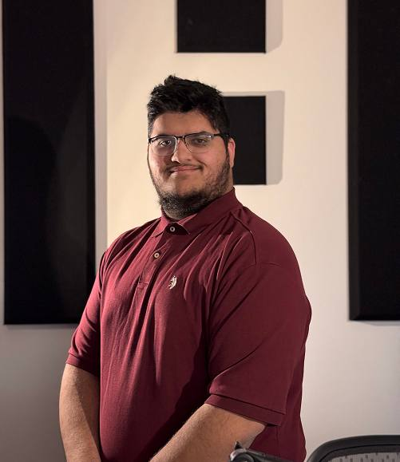

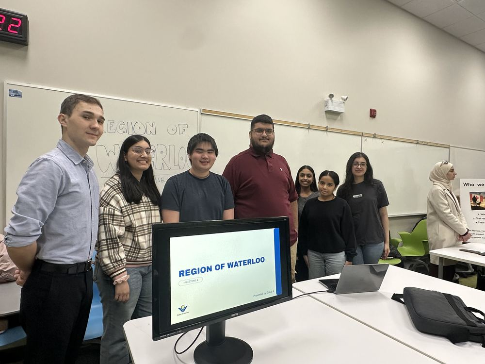
summer 2027!
Next up: Business Analyst Intern at Deloitte, Technology & Transformation, May to August 2027.
Selected work
Things I made for real people
G-Class Drivers
Usability tests showed a pop-up blocking almost every task, so I redesigned the site. Then I gave the school its own system: student and instructor apps, an office portal and Zun Drivers, our own online course.
↗Read the case study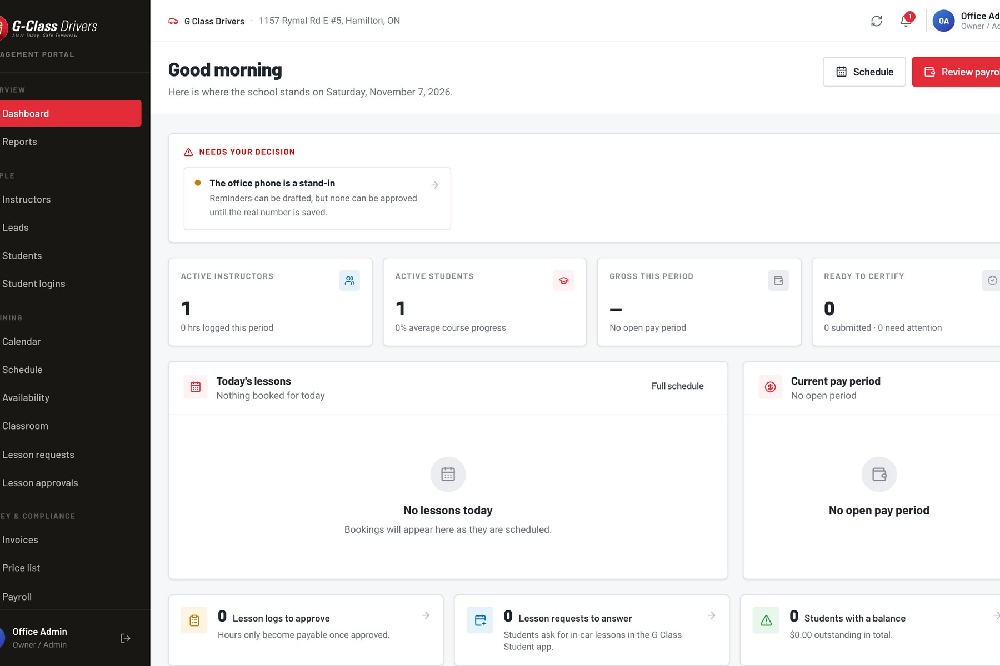
Region of Waterloo
Region staff couldn't find guidance scattered across Excel, Teams, and SharePoint. I researched what they actually needed and designed a searchable playbook built around checklists, not documents.
↗Read the case study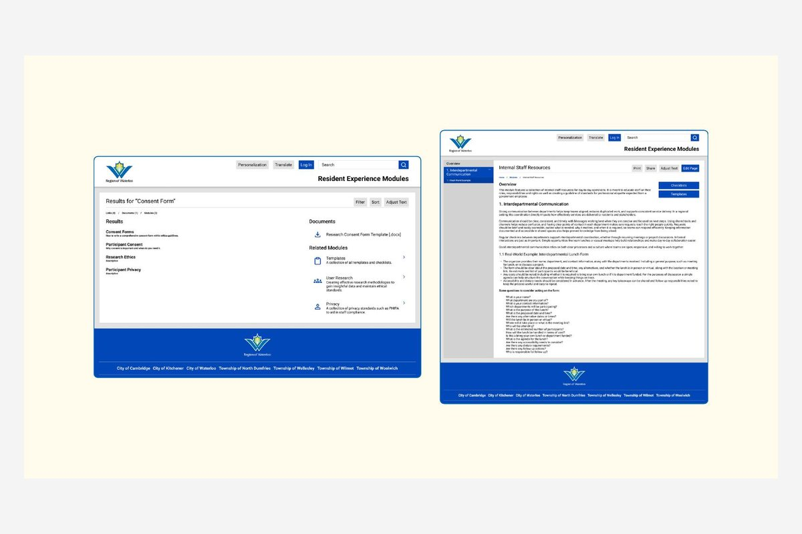
Website redesigns
More sites, live today
Each one started with who actually visits, and what they need to find before they'll pick up the phone.
More work
Builds, services and studies
- 05
Reminder Box
2025 · ArduinoPhone reminders get swiped away. A physical box that uses light and sound instead.
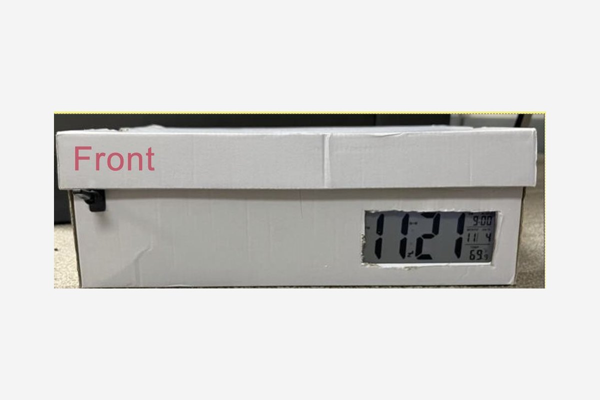
- 06
Posture Check
2025 · ArduinoAn ultrasonic sensor that nudges instead of scolds, because students said they'd unplug anything harsher.
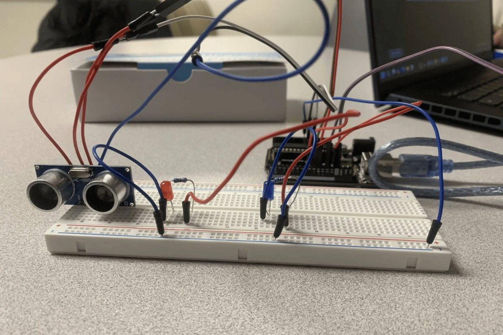
- 07
Cinema Seat Reservation
2024 · Mobile UXThe real bottleneck wasn't the seat map. It was finding a movie.
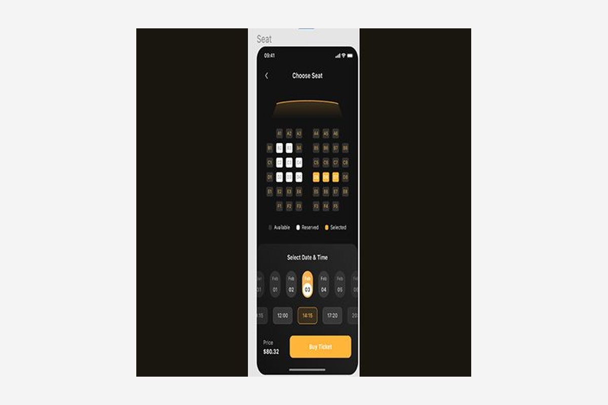
- 08
Laurier Wellness Services
2024 · Service design65% of students didn't know what wellness services existed. I mapped the full service blueprint.
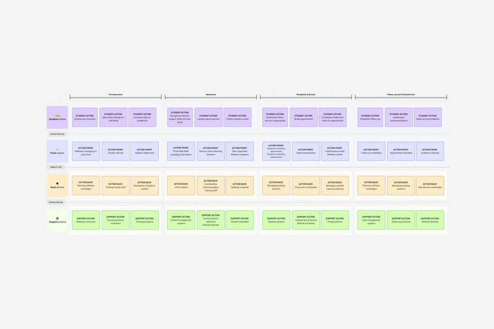
- 09
Zinger Music App
2025 · Product designPeople stay on Spotify because of switching cost, not UX. I designed around three real personas.
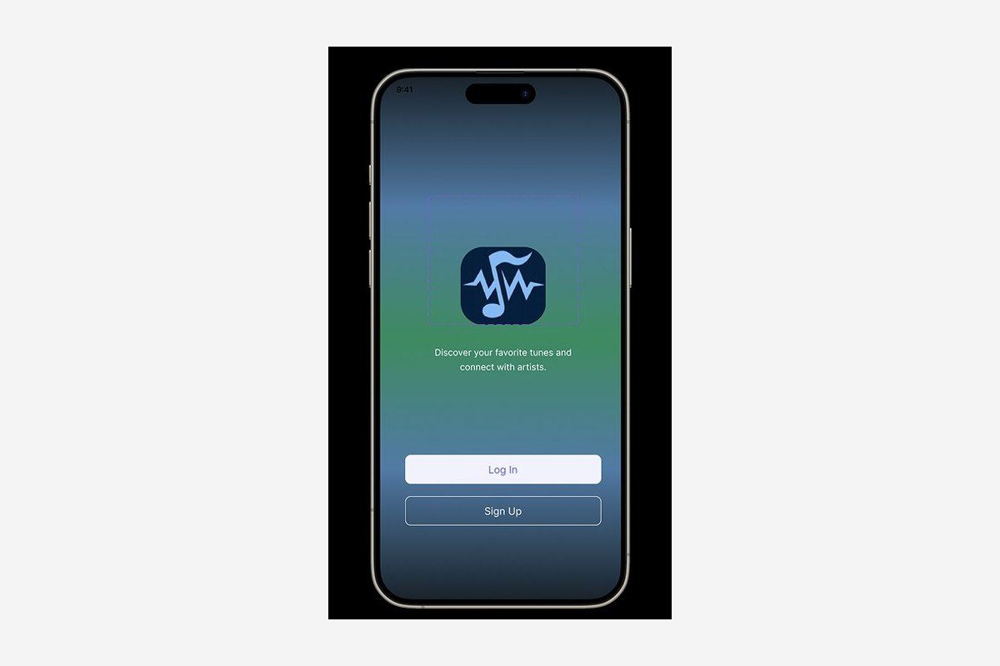
- 10
Money Management
2025 · Client project20+ interviews for a real Laurier client shaped 15+ solution concepts for students.
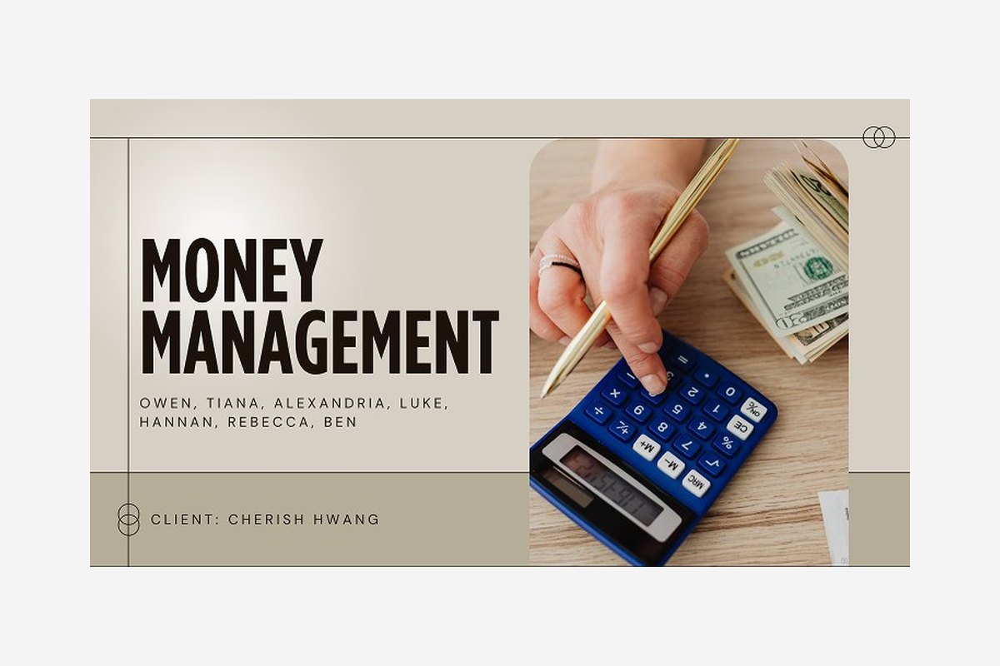
What I do
I do user research, 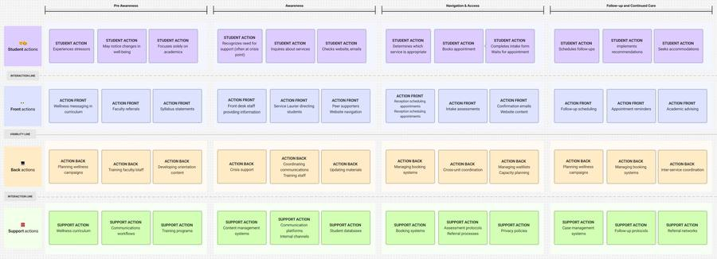 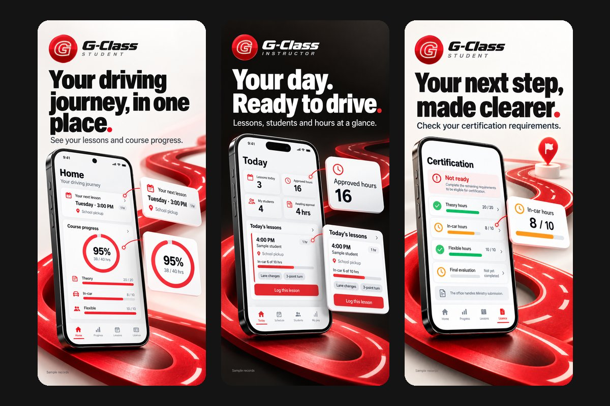 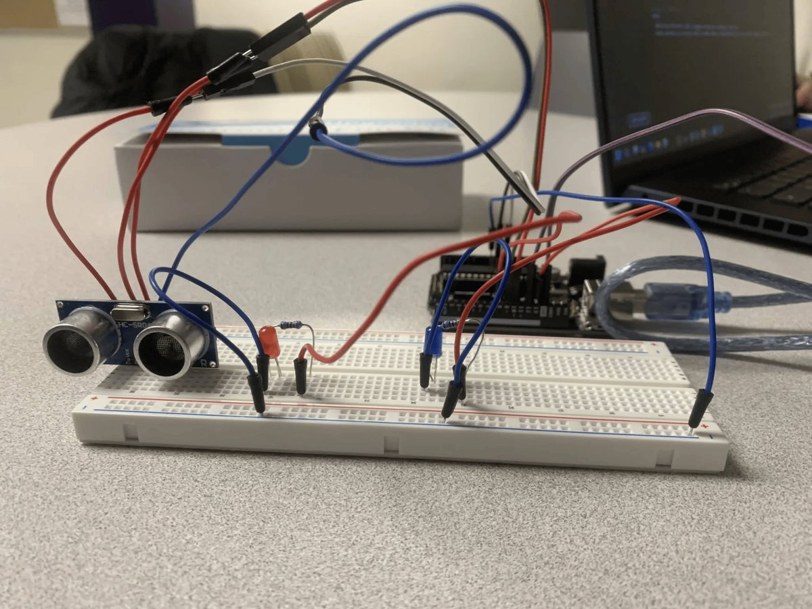
“Good design is invisible. Bad design is a barrier.”
My aunt Isma is the reason I ended up in UX. She lives with a rare eye disability, and watching her struggle with everyday apps and websites made me realize how much design actually matters.
Now whenever I design something, I think about Isma first. If she can use it comfortably and without frustration, I'm on the right track.
more about me →Experience
Where I've worked
- May to Aug 2027Business Analyst InternDeloitte, Technology & Transformationnext!
- Oct 2026 to presentUX ResearcherRetrace AI at Sauvrn AI, via Riipennow
- Sep 2025 to presentUX Design Intern, Product + UX LeadG-Class Drivers, research, website and office appsnow
- 2026 to presentWeb DesignerMath Learning Centre, mathlc.netnow
- Jul 2024 to presentOffice AdministratorG-Class Drivers
- CurrentPresidentPakistani Student Association, Laurier Brantford
Let's make something easier to use.
Got a project, a question, or just want to talk accessibility? Email is the fastest way to reach me.